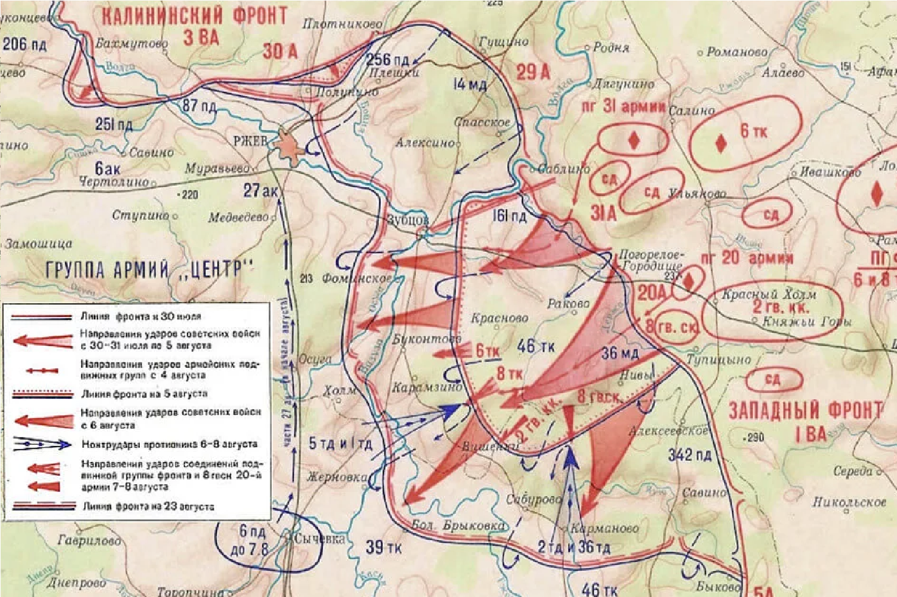
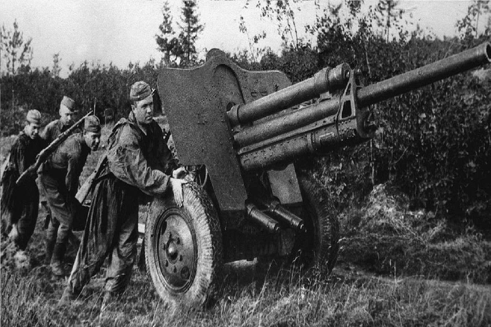
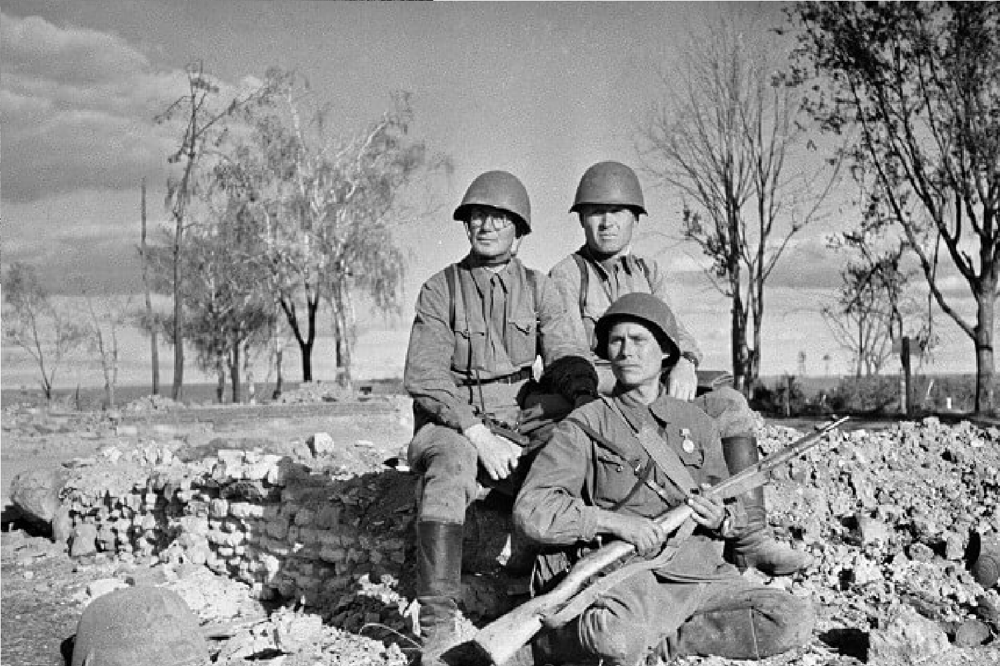

1942
|  |
|
|
Операция "Марс" (ноябрь 1942 - январь 1943): Основное наступление советских войск началось в ноябре 1942 года. Советское командование стремилось освободить город Ржев и создать плацдарм для дальнейших операций. Однако операция закончилась большими потерями для Красной армии без достижения значимых результатов. Операция "Старенко" и "Ржевско-Вяземская" операция (январь - март 1943): В 1943 году была проведена серия операций для окончательного освобождения Ржева. Стратегия изменилась, и в битве активно использовались глубокие прорывы и маневренные действия. |
 |
|  |
Несмотря на большие потери, Ржевская битва позволила ослабить немецкие силы и отвлечь их внимание от других участков фронта, в частности, от Сталинграда. Окончательно Ржев был освобожден в марте 1943 года. Битва принесла огромные потери с обеих сторон: по оценкам, советские войска потеряли более миллиона человек, немцы также понесли значительные потери, однако освобождение Ржева открыло путь для дальнейших операций советской армии и способствовало общему наступательному курсу Красной Армии. |